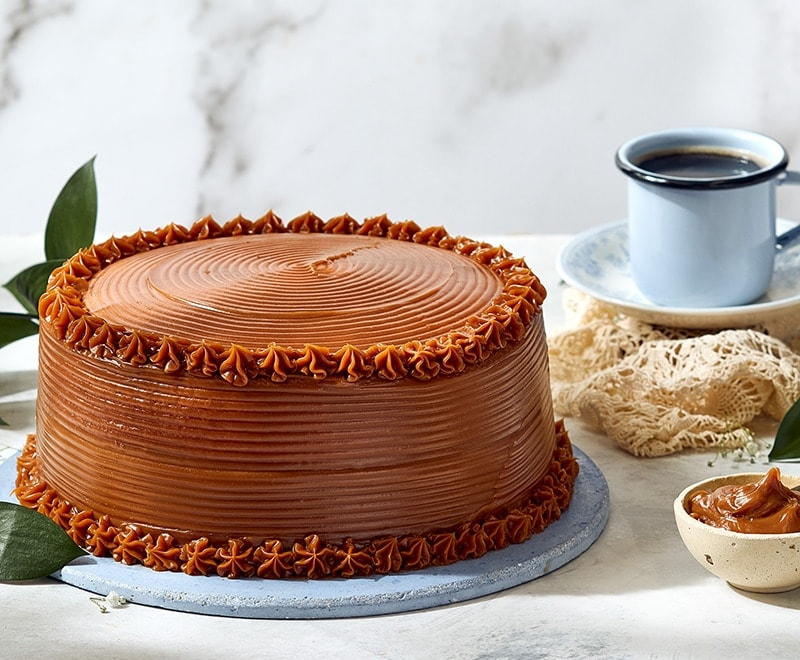

Pastel de arequipe
Un pastel profundamente sabroso, impregnado del dulce perfil del arequipe. El bizcocho es tierno y
esponjoso, mientras que el glaseado o cobertura de arequipe le aporta una capa cremosa y caramelizada,
generando un postre que combina elegancia, nostalgia y sabor intenso.

Ingredientes
Para el bizcocho:
- 2 tazas de harina de trigo (todo uso)
- 1 cucharadita de polvo para hornear
- ½ cucharadita de bicarbonato de sodio
- ¼ cucharadita de sal
- 1 barra de mantequilla (unos 115 g), a temperatura ambiente
- 1 taza de azúcar
- 1 cucharadita de esencia de vainilla
- 2 huevos grandes, a temperatura ambiente
- 1 taza de leche
- 6 cucharadas de arequipe
Para el glaseado:
- 1 taza de crema para batir (nata)
- ½ taza de arequipe
- 1 cucharadita de extracto de vainilla
- Una pizca de sal
Proceso
- Preparación inicial:
Precalienta el horno a 175 °C (350 °F). Engrasa un molde (aproximadamente 20–23 cm). Tamiza la harina
con el polvo de hornear, bicarbonato y sal.
- Batir mantequilla y azúcar:
En un recipiente, bate la mantequilla con el azúcar hasta que la mezcla esté pálida y cremosa. Agrega la
esencia de vainilla.
- Incorporar huevos y arequipe:
Añade los huevos uno a uno, batiendo bien después de cada adición. Luego, agrega la leche y las 6
cucharadas de arequipe, mezclando a baja velocidad hasta integrar.
- Mezclar con los ingredientes secos:
Incorpora la mezcla de harina en tres partes, integrando suavemente hasta que la masa esté homogénea.
- Hornear:
Vierte la masa en el molde y hornea unos 40 minutos, o hasta que al insertar un palillo en el centro
este salga limpio. Deja enfriar en el molde por 10 minutos y luego desmolda para enfriar completamente.
- Preparar el glaseado:
En una cacerola pequeña, combina la crema, arequipe, vainilla y sal. Cocina a fuego medio, revolviendo,
por unos 10 minutos hasta obtener una mezcla uniforme y ligeramente espesa.
- Glasear el pastel:
Vierte el glaseado caliente sobre el pastel enfriado, dejando que se deslice suavemente por los bordes
para un acabado elegante.
Un pastel jugoso y delicado, donde la textura suave y esponjosa del bizcocho se encuentra con el glaseado
cremoso y caramelizado del arequipe. Cada capa está impregnada con ese sabor dulce y reconfortante, perfecto
para ocasiones especiales o para consentirte.